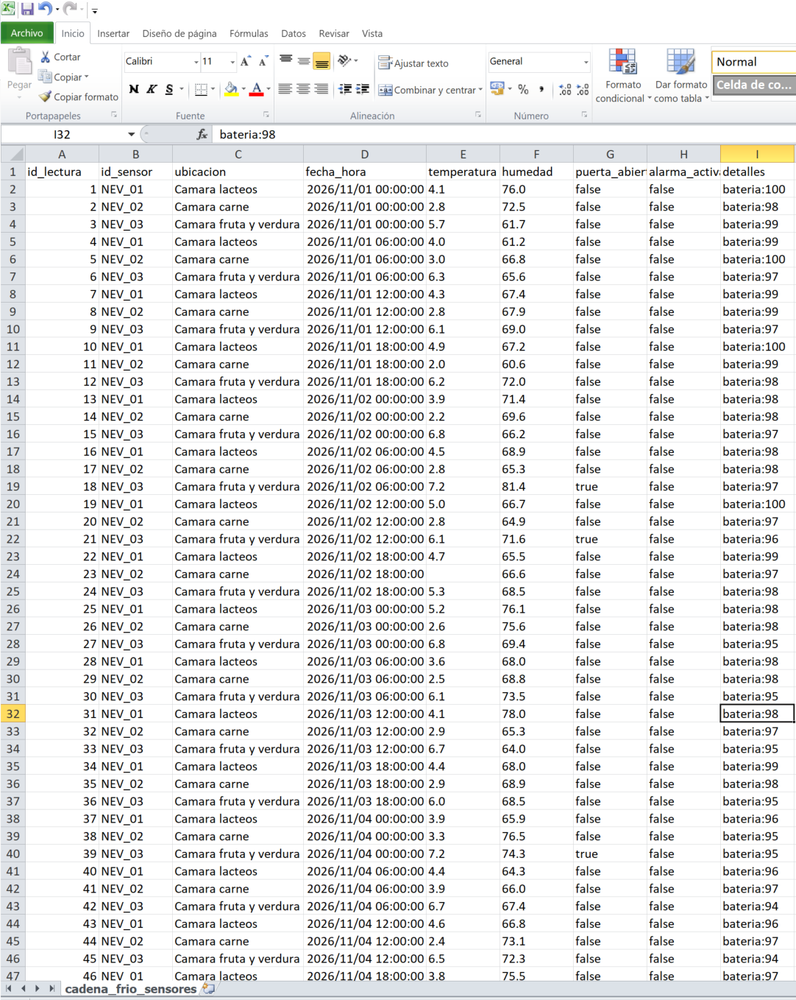
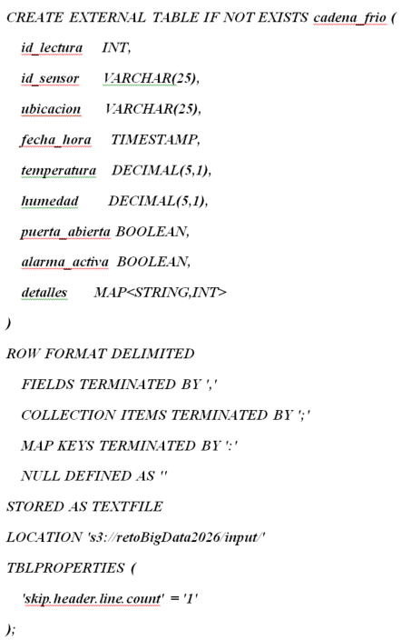

Sección 2 – Diseño de modelo de captación de datos
1. Temática y decisiones de negocio
El sistema consiste en sensores de temperatura y humedad que estarán instalados en tres cámaras frigoríficas de un almacén de productos perecederos (lácteos, carne, fruta-verdura). Cada sensor enviará registros en un intervalo de tiempo, por ejemplo 6 horas (00:00, 06:00, 12:00 y 18:00), a razón de cuatro lecturas diarias por cámara.
En cuanto a decisiones de negocio que permita tomar:
- Descartar producto cuando la temperatura oscile del rango seguro (2-8 °C) durante un tiempo prolongado, cumpliendo con controles sanitarios.
- Detectar errores y fallos (picos de temperatura) y ayuda a la gestión de mantenimiento de las cámaras.
- Sensores que ayuden a detectar aperturas de puerta por tiempo prolongado o fuera de horario que afecten a la estabilidad térmica y al consumo energético.
- Recolección de eventos y cumplimiento normativo.
2. Atributos y tipos de datos
El modelo contiene nueve atributos y contempla los tipos entero, decimal, texto, fecha o tiempo, booleano y map.
| Atributo | Tipo | Descripción | Ejemplo |
|---|---|---|---|
id_lectura | Entero | Identificador único de cada registro | 1 |
id_sensor | Texto varchar | Código del sensor (una cámara = un sensor) | NEV_01 |
ubicacion | Texto varchar | Cámara y producto almacenado | lacteos - carnes - frutas - verduras |
fecha_hora | Fecha/tiempo | Momento de la lectura | 2026-11-01 06:00:00 |
temperatura | Decimal | Temperatura interior en °C | 4.5 |
humedad | Decimal | Humedad relativa en % | 62.3 |
puerta_abierta | Booleano | Si la puerta estaba abierta en la lectura | false |
alarma_activa | Booleano | Si saltó la alarma de temperatura | false |
detalles | Map | Datos técnicos del sensor en pares clave-valor | bateria:87;senal:-60 |
3. Fichero CSV y valores introducidos
El fichero contiene 180 registros ficticios de tres sensores: NEV_01, NEV_02 y NEV_03, con 60 lecturas por sensor. Abarca 15 días naturales, del 1 al 15 de noviembre de 2026, con lecturas cada seis horas. El primer registro corresponde al 2026-11-01 00:00:00 y el último al 2026-11-15 18:00:00.
Descargar cadena_frio_sensores.csv

Valores nulos y outliers
Se han introducido tres valores nulos y dos valores anómalos en el campo numérico temperatura. Los nulos se representan mediante celdas vacías. Las temperaturas anómalas son 45 °C y −30 °C; el resto de las temperaturas no nulas se encuentra entre 2 °C y 7,7 °C.
| Incidencia | id_lectura |
Fila del CSV | Temperatura |
|---|---|---|---|
| Valor nulo | 23 | 24 | Vacío |
| Outlier | 58 | 59 | 45 °C |
| Valor nulo | 87 | 88 | Vacío |
| Outlier | 122 | 123 | −30 °C |
| Valor nulo | 142 | 143 | Vacío |
La numeración de filas cuenta la cabecera como fila 1. Estas referencias permitirán localizar los valores para la limpieza de datos de la sección 6.
Se ha utilizado ChatGPT como apoyo para revisar y preparar el CSV y la sentencia de creación de la tabla en Hive.
4. Creación de una tabla externa en Hive
Se utiliza la ubicación indicada en el enunciado: s3://retoBigData2026/input/. Para este ejercicio se supone que el CSV ya se encuentra en esa carpeta del bucket. La sentencia define la tabla externa y cómo interpretar los datos; no sube el archivo a S3.
Descargar la sentencia de Hive
CREATE EXTERNAL TABLE IF NOT EXISTS cadena_frio (
id_lectura INT,
id_sensor VARCHAR(25),
ubicacion VARCHAR(25),
fecha_hora TIMESTAMP,
temperatura DECIMAL(5,1),
humedad DECIMAL(5,1),
puerta_abierta BOOLEAN,
alarma_activa BOOLEAN,
detalles MAP<STRING,INT>
)
ROW FORMAT DELIMITED
FIELDS TERMINATED BY ','
COLLECTION ITEMS TERMINATED BY ';'
MAP KEYS TERMINATED BY ':'
NULL DEFINED AS ''
STORED AS TEXTFILE
LOCATION 's3://retoBigData2026/input/'
TBLPROPERTIES (
'skip.header.line.count' = '1'
);

La coma separa los atributos. En detalles, el punto y coma separa los elementos del mapa y los dos puntos separan cada clave de su valor. Los campos vacíos se interpretan como nulos y se omite la primera línea, que contiene la cabecera.
La sentencia se ha preparado conforme a la documentación; no se ha ejecutado en un entorno Hive, tal como permite el enunciado.